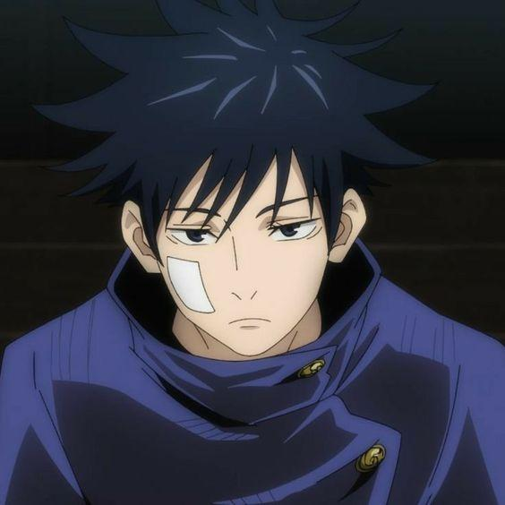

-
Itadori
Descrição
Itadori Yuuji é conhecido por sua determinação inabalável e altruísmo. Desde que engoliu o dedo de Sukuna, um poderoso espírito amaldiçoado, ele aceitou seu destino com coragem e se comprometeu a salvar as pessoas ao seu redor. Yuuji se destaca por sua força física extraordinária e sua capacidade de adaptação rápida às situações mais adversas. Ele é um estudante dedicado na Escola Técnica Superior de Jujutsu de Tóquio, onde treina arduamente para aprimorar suas habilidades e combater maldições. Sua personalidade cativante e senso de justiça fazem dele um aliado valioso e um amigo leal, sempre disposto a sacrificar-se pelo bem dos outros..
-
Sukuna
Descrição
Sukuna é conhecido como o Rei das Maldições, temido por sua imensa crueldade e poder avassalador. Antigamente um feiticeiro humano, ele se tornou uma entidade amaldiçoada extremamente poderosa, com habilidades que superam as de qualquer outro espírito maligno. Sukuna possui uma aura de autoridade e desprezo, encarando a humanidade como criaturas inferiores. Mesmo preso dentro do corpo de Itadori Yuuji, ele mantém um comportamento arrogante e manipulador, sempre procurando maneiras de recuperar sua força total e causar destruição. Seus poderes são vastos e aterrorizantes, tornando-o uma ameaça constante para todos ao seu redor. A combinação de sua inteligência afiada, sadismo e força implacável faz dele uma presença ameaçadora e quase invencível no mundo das maldições.
-
Gojo
Descrição
Satoru Gojo é um dos instrutores mais respeitados da Escola Técnica Superior de Jujutsu de Tóquio. Ele é conhecido como o "O feiticeiro Jujutsu mais forte" e é reconhecido por sua personalidade extrovertida e carismática. Com habilidades excepcionais em Jujutsu, especialmente em sua técnica única, "Infinito", Gojo é um mestre em combate, capaz de enfrentar até mesmo as maldições mais poderosas. Ele é um mentor dedicado, protetor com seus alunos, especialmente com Itadori Yuuji. Sua determinação em proteger aqueles que ama e erradicar o mal do mundo o torna um pilar de força e esperança na luta contra as maldições.
-
Megumi
Descrição
Megumi Fushiguro, estudante da Escola Técnica Superior de Jujutsu de Tóquio, destaca-se por sua seriedade e habilidades notáveis em combate. Apesar de vir de uma linhagem de feiticeiros talentosos, ele desafia as expectativas ao trilhar seu próprio caminho, determinado a definir sua própria justiça. Com uma conexão única com a natureza e a capacidade de convocar espíritos amaldiçoados, Megumi mostra-se como um dos mais promissores feiticeiros de sua geração, dedicado a proteger os inocentes e a enfrentar as ameaças sobrenaturais com coragem e habilidade inspiradoras.
-
Nobara
Descrição
Nobara Kugisaki, outra estudante da Escola Técnica Superior de Jujutsu de Tóquio, é reconhecida por sua ousadia e habilidades únicas em combate. Originária de uma área rural, ela desafia as normas sociais e os estereótipos ao ingressar na escola, determinada a mostrar sua força e talento. Com seu arsenal de técnicas de Jujutsu e sua personalidade franca, Nobara se destaca como uma das mais notáveis feiticeiras de sua geração. Sua determinação em proteger os inocentes e sua coragem em face do perigo a tornam uma aliada confiável e uma adversária formidável, inspirando aqueles ao seu redor com sua resolução inabalável.
-
Maki
Descrição
Maki Zenin, uma estudante da Escola Técnica Superior de Jujutsu de Tóquio, é conhecida por sua determinação inabalável e suas habilidades excepcionais em combate. Apesar de sua origem em uma família prestigiosa de feiticeiros, Maki escolhe seguir seu próprio caminho, desafiando as expectativas e enfrentando o preconceito de sua linhagem. Munida de uma força física impressionante e uma coragem indomável, ela se destaca como uma das mais promissoras feiticeiras de sua geração. Maki é uma combatente incansável, dedicada a proteger aqueles que ama e a defender o mundo contra as ameaças das maldições. Sua determinação e habilidade inspiram aqueles ao seu redor, tornando-a não apenas uma aliada confiável, mas também uma adversária formidável e respeitada.